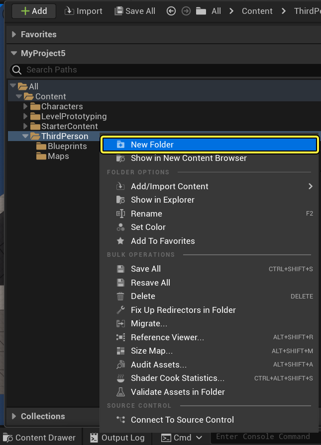
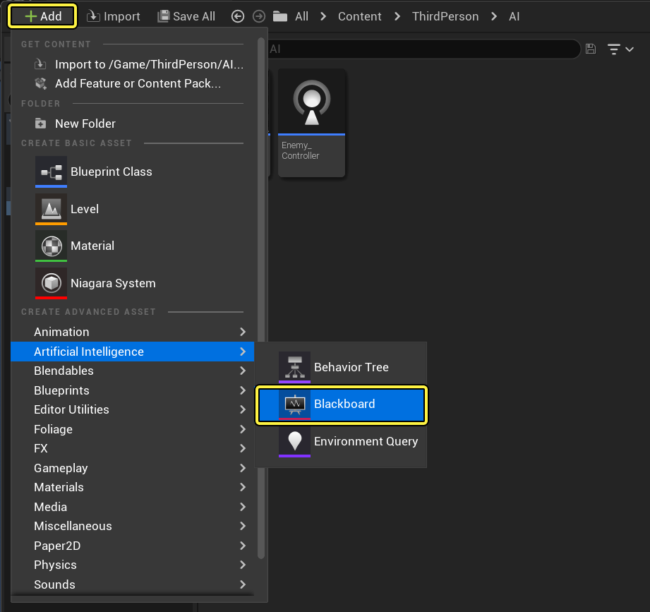
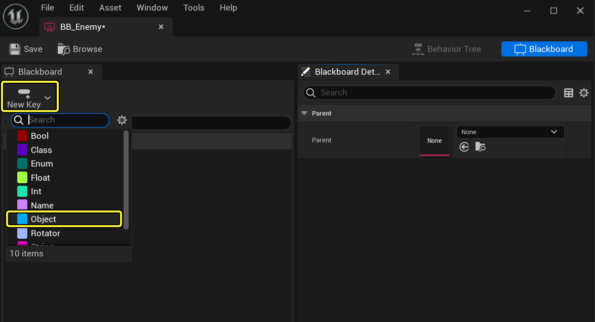
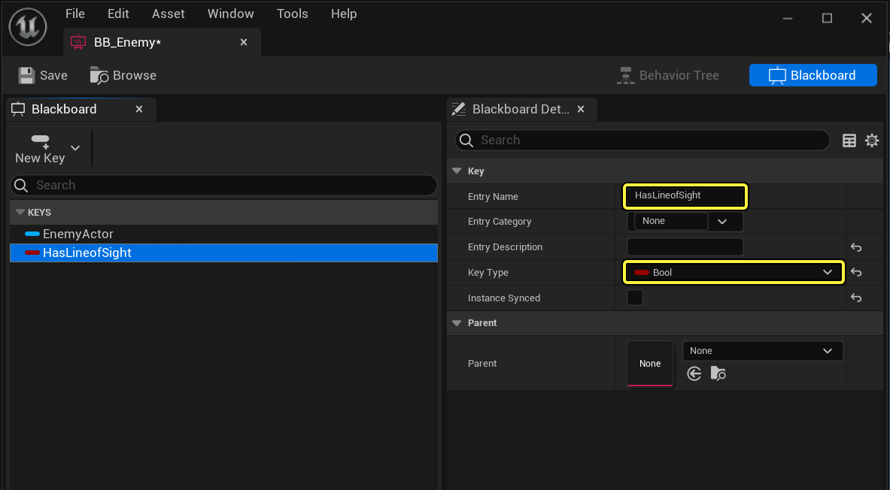
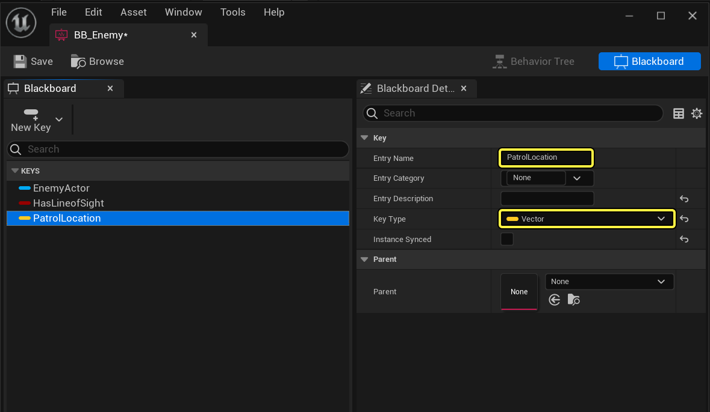
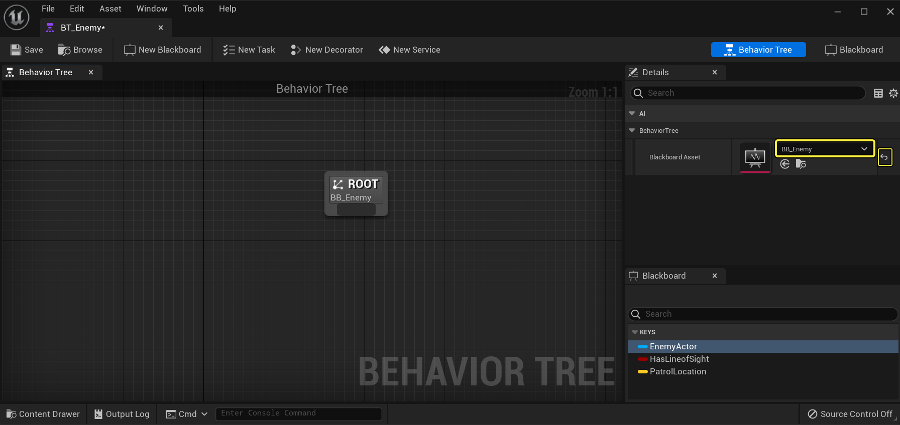
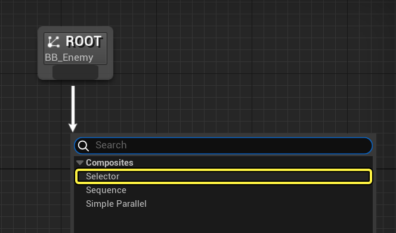
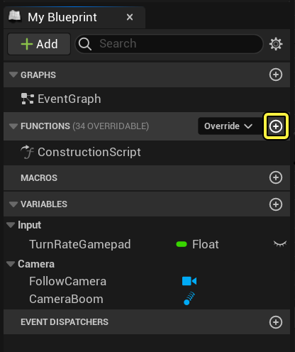

En la Guía de Inicio Rápido del Árbol de Comportamiento, aprenderás a crear una IA enemiga que responda al ver al jugador y proceda a perseguirlo. Al perder de vista al Jugador, tras unos segundos (que se pueden ajustar según tu preferencia), la IA dejará de perseguirla y se moverá aleatoriamente por el entorno hasta volver a ver al Jugador, como se ve en el vídeo de ejemplo de abajo.

Esta guía muestra cómo utilizar árboles de comportamiento para configurar un personaje de IA que patrullará o perseguirá a un jugador.
En la Guía de inicio rápido del Árbol de comportamiento , aprenderás a crear una IA enemiga que reacciona al ver al jugador y comienza a perseguirlo. Al perder de vista al jugador, tras unos segundos (que puedes ajustar según tus preferencias), la IA dejará de perseguirlo y se moverá aleatoriamente por el entorno hasta volver a verlo, como se muestra en el siguiente video de ejemplo.
(aqui va un video)
Al final de esta guía, comprenderá los siguientes sistemas:
En este primer paso, configuramos nuestro proyecto con los recursos que necesitaremos para que nuestro personaje de IA se desplace por el entorno.
Para esta guía, utilizamos un nuevo proyecto de plantilla en tercera persona de Blueprint .
Abra el cajón de contenido , luego haga clic derecho en la carpeta ThirdPerson y cree una nueva carpeta llamada AI .

En la carpeta ThirdPerson > Blueprints , arrastre BP_ThirdPersonCharacter a la carpeta AI y seleccione Copiar aquí .

En la carpeta AI , cree una nueva clase Blueprint basada en la clase AIController

Nombra el plano AIController Enemy_Controller y el plano BP_ThirdPersonCharacter Enemy_Character .

Abre Enemy_Character y luego elimina todo el script del gráfico.
Seleccione el componente Movimiento del personaje y luego configure la Velocidad máxima de caminata en el panel Detalles en 120.0 .

Haga clic en la imagen para verla completa.
Esto reduce la velocidad del movimiento de nuestro personaje de IA por el entorno cuando patrulla y no persigue al jugador.
Seleccione Valores predeterminados de clase en la barra de herramientas y luego, en el panel Detalles , asigne Enemy_Controller como la clase de controlador de IA .

Haga clic en la imagen para verla completa.
Vamos a colocar nuestra IA en el mundo. Si la generas después de que se cargue el mundo, cambia la configuración de Posesión automática de IA a Generada .
Desde el cajón de contenido , arrastre el personaje enemigo al nivel.
Desde el panel Actores de lugar , arrastre un NavMeshBoundsVolume al Nivel.

Con NavMeshBoundsVolume seleccionado, presione R y escale el volumen para encapsular todo el nivel.

Esto generará una malla de navegación que permitirá a nuestro personaje de IA moverse por el entorno. Puedes pulsar la tecla P para alternar la visualización de la malla de navegación en la ventana gráfica (las áreas verdes indican posibles ubicaciones de navegación).
Durante el juego, puedes usar el comando de consola Mostrar navegación para activar o desactivar la visualización de NavMesh.
La configuración de nuestro proyecto está completa, en el siguiente paso configuraremos nuestro activo Blackboard .
En este paso, creamos nuestro recurso Blackboard , que es básicamente el cerebro de nuestra IA. Todo lo que queramos que nuestra IA sepa tendrá una clave Blackboard a la que podremos hacer referencia. Crearemos claves para rastrear al jugador, independientemente de si la IA tiene línea de visión con él y una ubicación a la que la IA pueda moverse cuando no esté persiguiéndolo.
En el Cajón de contenido , haga clic en +Agregar y, en Inteligencia artificial , seleccione Pizarra y llámelo BB_Enemy .

Dentro de la pizarra BB_Enemy , haga clic en el botón Nueva clave y seleccione Objeto .

El activo de Blackboard consta de dos paneles: Blackboard , que le permite agregar y realizar un seguimiento de sus claves de Blackboard (variables para monitorear), y Blackboard Details , que le permite nombrar y especificar el tipo de claves.
Para la clave Objeto , ingrese EnemyActor como Nombre de entrada y Actor como Clase base .

Agregue otra clave con el tipo de clave establecido en Bool llamada HasLineOfSight .

Esto se utilizará para realizar un seguimiento de si la IA tiene o no una línea de visión hacia el jugador.
Agregue otra clave , con el tipo de clave establecido en Vector , llamada PatrolLocation .

.png)
checar el orden de las imagenes
Esto se utilizará para realizar un seguimiento de una ubicación en el nivel donde la IA puede moverse cuando no está persiguiendo al jugador.
Nuestra pizarra está configurada con los elementos que necesitamos registrar. En el siguiente paso, diseñaremos nuestro árbol de comportamiento .
En este paso, diseñaremos el flujo de nuestro Árbol de Comportamiento y los estados en los que queremos que nuestra IA entre. Al diseñar visualmente el Árbol de Comportamiento con los estados que anticipa que su IA podría presentar, tendrá una idea del tipo de lógica y reglas que necesitará crear para entrar en esos estados.
En el Cajón de contenido , haga clic en +Agregar y, en Inteligencia artificial , seleccione Árbol de comportamiento y llámelo BT_Enemy .

Las convenciones de nomenclatura pueden variar, pero generalmente es una buena práctica agregar un acrónimo del tipo de activo al nombre.
Abra BT_Enemy y asigne BB_Enemy como activo de Blackboard .

Si no ve las claves de Blackboard que creamos, borre el activo de Blackboard haciendo clic en la flecha amarilla y luego vuelva a asignar Enemy_BB para actualizar las claves.
El Árbol de comportamiento consta de tres paneles: el gráfico del Árbol de comportamiento , donde se muestran visualmente las ramas y los nodos que definen los comportamientos, el panel Detalles , donde se pueden definir las propiedades de los nodos, y la Pizarra , que muestra las Teclas de la Pizarra y sus valores actuales cuando el juego se está ejecutando y es útil para la depuración.
En el gráfico, haga clic izquierdo y arrastre la raíz y agregue un nodo Selector .

Los compuestos son una forma de control de flujo y determinan cómo se ejecutan las ramas secundarias que están conectadas a ellos.
(generar una tabla)
Compuestos
Descripción
Selector
Ejecuta ramas de izquierda a derecha y se usa típicamente para seleccionar entre subárboles. Los selectores dejan de moverse entre subárboles cuando encuentran uno que ejecutan correctamente. Por ejemplo, si la IA persigue al jugador, permanecerá en esa rama hasta que finalice su ejecución y luego ascenderá al componente principal del selector para continuar el flujo de decisión.
Secuencia
Ejecuta ramas de izquierda a derecha y se usa más comúnmente para ejecutar una serie de hijos en orden. A diferencia de los selectores, la secuencia continúa ejecutando sus hijos hasta que llega a un nodo que falla. Por ejemplo, si tuviéramos una secuencia para mover al jugador, comprobar si está dentro del alcance, rotar y atacar. Si la comprobación de su alcance falla, las acciones de rotar y atacar no se realizarían.
Paralelo simple
Simple Parallel tiene dos conexiones. La primera es la Tarea Principal, a la que solo se le puede asignar un nodo de Tarea (es decir, no se permiten Compuestos). La segunda conexión (la Rama de Fondo) es la actividad que debe ejecutarse mientras la Tarea principal sigue en ejecución. Dependiendo de las propiedades, Simple Parallel puede finalizar al mismo tiempo que la Tarea Principal o esperar a que también finalice la Rama de Fondo.
Para el nodo Selector , en el panel Detalles , cambie el Nombre del nodo a AI Root .

Renombrar los nodos en el gráfico es una buena manera de identificar fácilmente, a grandes rasgos, su función. En este ejemplo, lo llamamos AI Root , ya que es la raíz real de nuestro árbol de comportamientos, que alternará entre nuestras ramas secundarias. El nodo raíz predeterminado, que se agrega automáticamente al crear un árbol de comportamientos, se utiliza para configurar las propiedades del árbol de comportamientos y asignar el recurso de Blackboard que utiliza.
Haga clic izquierdo y arrastre AI Root y agregue un nodo Secuencia llamado Chase Player .

Aquí usamos un nodo de secuencia porque planeamos indicarle a la IA que realice una secuencia de acciones: girar hacia el jugador, cambiar su velocidad de movimiento y luego moverse y perseguir al jugador.
Haga clic izquierdo y arrastre el nodo raíz de IA y agregue un nodo de secuencia llamado Patrulla .

Haga clic en la imagen para verla completa.
Para nuestra IA, utilizaremos el nodo Secuencia para encontrar una ubicación aleatoria en el mapa, movernos a esa ubicación y luego esperar allí un rato antes de repetir el proceso de encontrar una nueva ubicación a la cual movernos.
También puedes observar los números en la esquina superior derecha de los nodos:

Esto indica el orden de operación. Los árboles de comportamiento se ejecutan de izquierda a derecha y de arriba a abajo, por lo que la disposición de los nodos es importante. Las acciones más importantes para la IA suelen ubicarse a la izquierda, mientras que las menos importantes (o comportamientos de reserva) se ubican a la derecha. Las ramas secundarias se ejecutan de la misma manera y, si alguna rama secundaria falla, toda la rama dejará de ejecutarse y volverá a la rama superior del árbol. Por ejemplo, si Chase Player falla, regresará a la raíz de la IA antes de pasar a Patrol .
Arrastre AI Root y luego agregue una tarea de espera a la derecha de Patrulla con el tiempo de espera establecido en 1.0 .

Haga clic en la imagen para verla completa.
Observarás que este nodo es morado, lo que indica que es un nodo de tarea . Los nodos de tarea son las acciones que deseas que realice el Árbol de Comportamiento . La tarea de espera funciona como un recurso general si el Árbol de Comportamiento falla tanto en la Persecución del Jugador como en la Patrulla.
Arrastre el Chase Player y agregue un nodo Rotar a cara BBEntry .

Haga clic en la imagen para verla completa.
Esta tarea en particular permite designar una entrada de Blackboard que se desea rotar y orientar, en nuestro caso, el actor enemigo (jugador). Una vez agregado el nodo, si consulta el panel Detalles , la clave de Blackboard se establecerá automáticamente en EnemyActor, ya que filtra por la variable de Blackboard "Actor" y es la primera de la lista. Puede ajustar la opción "Precisión" si desea ajustar el rango de la condición de éxito, así como cambiar el nombre del nodo .
Desde la barra de herramientas , haga clic en el botón Nueva tarea .

Además de usar las tareas integradas, puedes crear y asignar tareas personalizadas con lógica adicional que puedes personalizar y definir. Esta tarea se usará para cambiar la velocidad de movimiento de la IA para que siga al jugador. Al crear una nueva tarea, se creará y abrirá automáticamente un nuevo plano .

Haga clic en la imagen para verla completa.
En el cajón de contenido , cambie el nombre del nuevo activo a BTT _ChasePlayer .
Se recomienda renombrar inmediatamente cualquier tarea , decorador o servicio recién creado. Una convención de nomenclatura adecuada sería anteponer al nombre del activo el tipo de activo creado, como BTT para tareas del árbol de comportamiento, BTD para decoradores del árbol de comportamiento o BTS para servicios del árbol de comportamiento.
Dentro de BT_Enemy , agregue la tarea BTT_ChasePlayer seguida de Mover a

Nuestra nueva tarea aún no tiene lógica, pero volveremos y agregaremos la lógica para cambiar la velocidad de movimiento de nuestro personaje de IA, después de lo cual, la IA se moverá al actor enemigo (jugador).
Cree una nueva tarea y cámbiele el nombre a BTT_FindRandomPatrol , luego conéctela a Patrol .

Haga clic en la imagen para verla completa.
Agregue una tarea "Mover a " y configure la clave de Blackboard en PatrolLocation .

Haga clic en la imagen para verla completa.
Esto le indicará a la IA que se mueva a la ubicación de patrulla que se establecerá dentro de la tarea BTT_FindRandomPatrol.
Agregue una tarea de espera después de Mover a con tiempo de espera en 4.0 y desviación aleatoria en 1.0 .

Haga clic en la imagen para verla completa.
Esto le indica a la IA que espere en PatrolLocation durante 3 a 5 segundos (la desviación aleatoria agrega + o - un segundo al tiempo de espera).
El marco de nuestro Árbol de Comportamiento está completo. En el siguiente paso, añadiremos la lógica para cambiar la velocidad de movimiento de la IA, encontrar una ubicación aleatoria a la que navegar cuando la IA esté patrullando y la lógica para determinar cuándo la IA debería perseguir al jugador o patrullar.
En este paso, configuramos nuestra tarea de perseguir al jugador para cambiar la velocidad de movimiento al perseguir al jugador.
Dentro de BTT_ChasePlayer , haga clic derecho y agregue un nodo AI de recepción y ejecución de evento .

El nodo AI de recepción y ejecución de eventos se activa cuando esta tarea se activa dentro del árbol de comportamiento .
Siempre debe seleccionar la versión de IA de Event Receive Execute , Event Receive Abort y Event Receive Tick si el agente es un controlador de IA. Si se implementan tanto la versión genérica como la de IA, solo se llamará la más adecuada; es decir, se llamará la versión de IA para IA y la genérica para los demás.
Desde el pin Peón controlado , utiliza un nodo Lanzar a personaje enemigo .

Aquí, accedemos al plano del personaje para nuestra IA llamado Enemy_Character mediante un nodo Cast.
Dentro del cajón de contenido , abra el plano Enemy_Character y agregue una función llamada Actualizar velocidad de caminata .

Esta función se llamará desde nuestro árbol de comportamiento y se utilizará para cambiar la velocidad de movimiento de la IA.
Técnicamente, podríamos acceder al componente de movimiento del personaje desde el nodo "Lanzar" en nuestra tarea "Perseguir jugador" y ajustar la velocidad de movimiento desde la tarea. Sin embargo, no se recomienda que el árbol de comportamiento modifique directamente las propiedades de los subobjetos. En su lugar, el árbol de comportamiento llamará a una función dentro del personaje que realizará las modificaciones necesarias.
En el panel Detalles de la función Actualizar velocidad de caminata , agregue una entrada Flotante llamada NewWalkSpeed.

Arrastre el componente CharacterMovement fuera de la pestaña Componentes

Haga clic y arrastre el pin de Movimiento del personaje y desde el menú de acciones escriba Establecer velocidad máxima de caminata , luego haga clic en Establecer velocidad máxima de caminata en el menú.

Utilice Establecer velocidad máxima de caminata y conéctelo como se muestra a continuación.